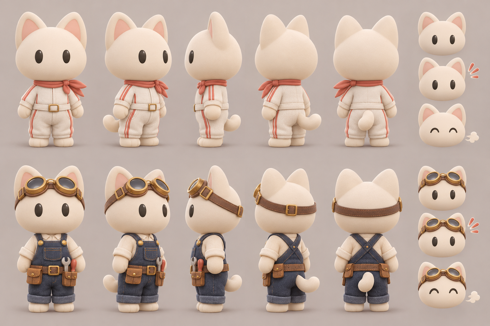

차량 구조·E/E 신호·제어 SW가 고장 현상과 어떻게 연결되는지 한 흐름으로 이해할 수 있습니다.

GAME EXPLANATION / PROLOGUE06 / 10
게임 설명
도주가 시작됩니다
F1 드라이버였던 볼트와 엔지니어였던 너트는 사기를 당해 누명을 쓰고 일자리를 잃었습니다. 빼앗긴 것을 되찾으려 폭스의 집을 턴 순간, 경찰차가 따라붙었습니다.
F1의 감각으로
차를 몰고 도망칩니다.
엔지니어의 눈으로
고장의 원인을 찾습니다.
폭스의 집을 턴 순간,
추격이 시작됩니다.